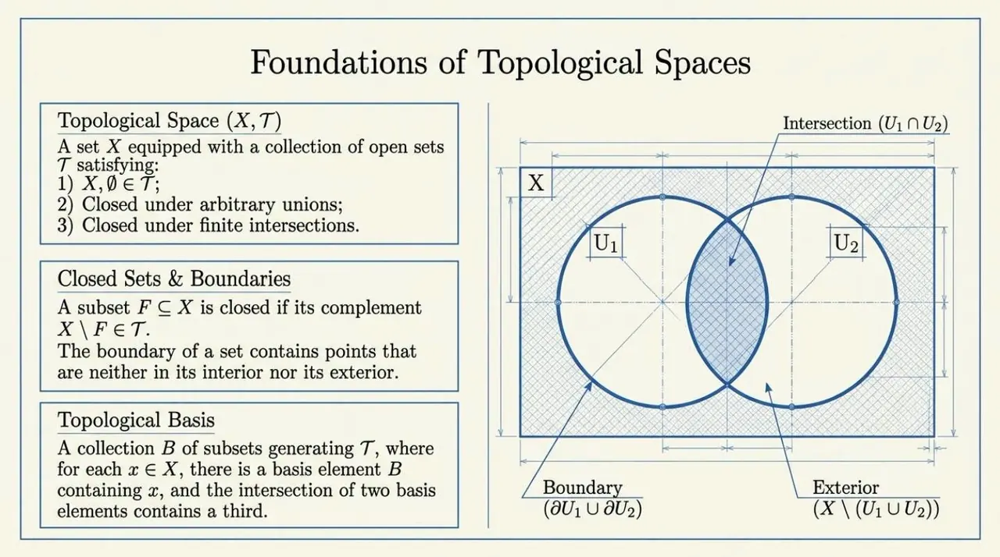

기둥 1 · 공간을 나누는 법 · 01장
열린 집합 — 이웃을 정하는 규칙
길이도 각도도 없이 「가까움」만 남기는 법
길이도 각도도 없이 「가까움」만 남기는 법
핵심 질문 — 자도 각도기도 없이, 「가깝다」는 말을 어떻게 정할 수 있을까?
위상수학은 「고무찰흙 기하학」이라고도 불러요. 늘이고 구부려도 찢거나 붙이지만 않으면 같은 모양으로 봅니다. 그러려면 길이 대신 이웃만 남겨야 하는데, 그 이웃을 정하는 규칙이 바로 열린 집합이에요.
숫자 요약은 이 장의 예시 계산에서 나온 값입니다(실제 데이터가 아닌 설명용 값).
어서 오세요, 위상수학 교실 첫 시간입니다. 오늘은 딱 하나만 가져가요. 「가까움을 정하는 규칙 3개」.
위상수학… 이름부터 어려워요. 행렬도 아직 헷갈리는데 괜찮을까요?
행렬·벡터, 복잡한 공식을 몰라도 됩니다. 그림을 움직여 보고, 밑줄 친 말을 누르면 뜻이 나옵니다.
이 페이지 사용법: 밑줄 친 말을 누르면 뜻이 나옵니다(Esc로 닫기). 단계마다 그림을 직접 움직여 보고, 끝의 확인 퀴즈로 점검하세요. 앞 장: 오리엔테이션
박사가 짧게 강의하고, 단계마다 수강생이 그림을 직접 움직여 본 뒤 마지막에 확인 퀴즈(쪽지시험)를 풉니다.
첫 수업이니까 저는 맨 앞자리요! 1조, 2조 모두 화이팅!
…쪽지시험은 몇 문제예요?
도넛과 손잡이 달린 컵은 길이·각도가 다르지만 「구멍 하나」라는 성질은 같아요. 이런 성질을 다루려면 길이 대신 이웃만 남겨야 해요.
연결(03장), 콤팩트(04장), 연속 함수(12장)는 모두 「열린 집합」이라는 말 하나로 정의됩니다.
픽셀 사진(05장)이나 데이터의 이웃 구조처럼, 자가 없는 세계에서도 이웃 규칙만 있으면 모양을 따질 수 있어요.
이번 장의 단어 세 개(열린 집합, 닫힌 집합, 경계)는 마지막 장까지 계속 나와요. 한 번에 외우지 않아도 괜찮아요. 나올 때마다 밑줄을 눌러 다시 보면 됩니다.
상황 질문 — 운동장 안에 서 있는 친구에게 「한 발짝 어느 쪽으로 움직여도 운동장 안이야?」라고 물으면 언제 「예」라고 할까요?
(0, 1)이랑 [0, 1]은 괄호 모양만 다른데, 뭐가 달라요?
학교 수학으로 보면: 중학교 부등식 0 < x < 1 과 0 ≤ x ≤ 1 의 차이와 같아요. 둥근 괄호는 끝점 빠짐(<), 각진 괄호는 끝점 포함(≤).
| 식 조각 | 읽는 법 | 뜻 |
|---|---|---|
| (0, 1) | 영 일 열린 구간 | 0보다 크고 1보다 작은 수 전부. 0과 1은 빠짐 |
| [0, 1] | 영 일 닫힌 구간 | 0과 1까지 포함 |
| ε | 엡실론 | 아주 작은 양수 여유. 「조금」을 기호로 쓴 것 |
점 0.9는 (0, 1) 안. 양쪽 여유 ε = 0.1 → 0.8 ~ 1.0 사이가 모두 들어감 (끝 1.0은 빼고)
점 1은 [0, 1] 안. 그런데 1.01은 밖 → 오른쪽 여유 0
그래서 (0, 1)은 열린 집합, [0, 1]은 열린 집합이 아님
아, 끝점에 서 있으면 바깥으로 한 발짝도 못 가니까 「여유 0」이구나!
운동장 안쪽에 서 있으면 어느 쪽으로든 한 발짝은 갈 수 있어요. 하지만 울타리 바로 위에 서 있으면 바깥쪽으로는 한 발짝도 못 가요.
집합의 모든 점 둘레에 「집합 안에만 있는 작은 여유」가 있으면 그 집합을 열린 집합이라 해요. 수직선에서는 끝점이 빠진 (0, 1)이 대표 예.
점을 끝점 0이나 1로 옮기면 무슨 일이 생길까요?
0.999도 1도 거의 같은데, 차이가 있을 리 없죠!
왼쪽 끝을 「닫힘」으로 바꾸고 점을 0에 두고 눌러 봐.
원자료 「Foundations of Topological Spaces」. 이 단계는 그림 오른쪽의 겹친 두 원 가운데 「경계」 개념의 바탕이에요.

상황 질문 — 반 친구들로 「같이 다니는 무리」 목록을 만든다면, 목록이 엉망이 되지 않게 어떤 규칙을 정해야 할까요?
𝒯 같은 꼬부랑 글자가 나오면 일단 겁이 나요. 그게 뭐예요?
학교 수학으로 보면: 고등학교 「집합」 단원의 합집합·교집합과 같아요. 𝒯는 그냥 「목록」에 붙인 이름표예요.
| 식 조각 | 읽는 법 | 뜻 |
|---|---|---|
| 𝒯 | 타우 | 열린 집합들을 모은 목록(위상) |
| X, ∅ ∈ 𝒯 | 엑스와 공집합이 타우에 속한다 | 규칙 1: 전체와 빈 집합은 늘 목록에 |
| U ∪ V ∈ 𝒯 | 유 합집합 브이 | 규칙 2: 목록의 것을 몇 개(무한히 많아도) 합쳐도 목록에 |
| U ∩ V ∈ 𝒯 | 유 교집합 브이 | 규칙 3: 목록의 것 두 개(유한 개)의 겹친 부분도 목록에 |
X = {1, 2, 3}, 목록 𝒯 = {∅, {1}, {1, 2}, X}
규칙 2: {1} ∪ {1, 2} = {1, 2} → 목록에 있음
규칙 3: {1} ∩ {1, 2} = {1} → 목록에 있음
목록 {∅, {1}, {2}, X}는? {1} ∪ {2} = {1, 2}가 없음 → 위상 아님
규칙 확인은 결국 「합쳐 보고, 겹쳐 보고, 목록에 있나」 찾는 거네요. 이건 할 수 있겠어요!
동아리 목록 규칙: ① 「아무도 없는 모임」과 「반 전체」는 늘 목록에 ② 목록의 모임을 합친 큰 모임도 목록에 ③ 두 모임에 다 속한 사람들의 모임도 목록에.
집합 X와 부분집합 목록 𝒯가 세 규칙을 지키면 (X, 𝒯)를 위상 공간이라 하고, 𝒯의 원소를 열린 집합이라 불러요.
「규칙 깨진 예」를 눌러 보세요. 어느 규칙이 깨졌나요?
목록이 많을수록 좋은 위상이에요. 다 켜면 끝!
다 켜는 것도 위상이긴 해. 그런데 {1}만 끄면 어떻게 되는지 봐.
원자료의 Topological Space 상자: 세 공리(X와 ∅, 임의의 합집합, 유한 교집합).
상황 질문 — 호수 지도를 그릴 때 「물가」는 물에 속할까요, 땅에 속할까요?
X \ F 에서 거꾸로 된 사선은 나누기예요?
학교 수학으로 보면: 나누기가 아니라 「빼기」예요. 집합 단원의 차집합 X − F와 같아요.
| 식 조각 | 읽는 법 | 뜻 |
|---|---|---|
| X \ F | 엑스 빼기 에프 | X에서 F를 뺀 나머지(여집합) |
| F 닫힘 | 에프는 닫힌 집합 | X \ F가 열린 집합이면 F를 닫힌 집합이라 함 |
| ∂U | 유의 경계 (라운드 디) | U의 안쪽도 바깥쪽도 아닌 점들 |
X = (수직선 전체), U = (0, 1)
바깥 X \ U = (−∞, 0] ∪ [1, ∞) → 이것은 닫힌 집합
경계 ∂U = {0, 1} — 두 끝점
[0, 1]은 바깥 (−∞, 0) ∪ (1, ∞)가 열려 있으니 닫힌 집합
「닫힌」은 「열린」의 반대말이 아니라 「바깥이 열린」이라는 뜻이었군요.
호수의 물은 안쪽, 육지는 바깥, 물가는 경계예요. 물가에 서면 한 발은 물에, 한 발은 땅에 닿아요.
점 둘레의 아무리 작은 열린 집합도 U의 안과 밖을 함께 담으면 그 점은 U의 경계예요. 열린 집합의 바깥은 닫힌 집합이고, 모든 열린 집합을 합집합으로 만들어 내는 재료 모음이 기저예요.
두 원이 겹친 곳을 고르고, 원의 선 위를 눌러 보세요.
선 위는 안쪽일까요, 바깥일까요…?
선 위의 점 둘레엔 안과 밖이 다 들어 있어. 그래서 따로 이름이 있지.
원자료의 Closed Sets & Boundaries, Topological Basis 상자와 오른쪽 두 원 그림.
기저 𝓑의 조건: (1) 모든 점 x는 어떤 B ∈ 𝓑에 속한다. (2) x ∈ B₁ ∩ B₂이면 x ∈ B₃ ⊆ B₁ ∩ B₂인 B₃ ∈ 𝓑가 있다. 이때 𝓑의 원소들의 합집합 전체가 위상이 된다.
하루가 AI에게 「(0, 1/n) 꼴 열린 구간을 n = 1, 2, 3, …에 대해 모두 겹치면 무엇이 남나요?」라고 물었더니 이렇게 답했어요.
AI가 규칙을 「항상」이라고 말하면, 그 규칙의 조건(유한 개인지)을 꼭 확인하세요. 숫자 몇 개(n = 1, 10, 100)를 직접 넣어 보면 금방 드러납니다.
(−1, 1), (−1/2, 1/2), (−1/3, 1/3), … 처럼 점점 좁아지는 열린 구간을 끝없이 겹쳤을 때 남는 집합이 열린 집합인지 두 조교가 맞붙었어요.
「남는 건 점 0 하나뿐이고, {0}은 열린 집합이 아니야.」
「열린 것끼리 겹쳤으니 당연히 열린 집합이죠!」
누가 맞을지 먼저 예상해 보고 단추를 누르세요. 판정은 계산 결과로만 합니다.
개념정리 흐름: 열린 구간과 여유 → 위상 (열린 집합의 세 규칙) → 닫힌 집합과 경계
| 개념 | 한 줄 뜻 | 일상 비유 | 비유의 한계 |
|---|---|---|---|
| 열린 집합 | 모든 점 둘레에 여유가 있는 집합 (위상 목록의 원소) | 울타리에 붙지 않은 운동장 안쪽 | 실제 위상에서는 「여유」를 거리로 재지 않고 목록으로 정해요 |
| 위상 | 세 규칙을 지키는 열린 집합 목록 | 동아리 목록 규칙 | 동아리는 사람이 정하지만 위상은 규칙만 지키면 무엇이든 가능 |
| 닫힌 집합 | 바깥이 열린 집합인 집합 | 물가까지 포함한 호수 | 열린 집합의 「반대말」이 아니에요. 열리면서 닫힌 집합도 있어요(02장) |
| 경계 | 아무리 작은 이웃도 안과 밖을 함께 담는 점들 | 호수의 물가 | 수학의 경계는 두께가 0 |
오늘의 한 줄: 위상 = 「이웃 목록」, 규칙은 세 개.
괄호 모양 하나로 열림·닫힘이 갈리는 게 신기했어요.
무한히 겹치는 건… 다음부터 손으로 세어 볼게요.
다음 시간 1:1 토론 상대는 모아예요. 미리 정리해 둘게요.
다음 장 예고: 02장에서는 목록이 「가장 많을 때(이산)」와 「가장 적을 때(밀착)」를 두고 시아와 모아가 1:1 토론을 해요.